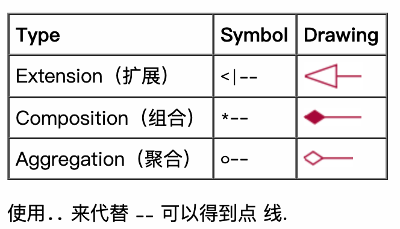
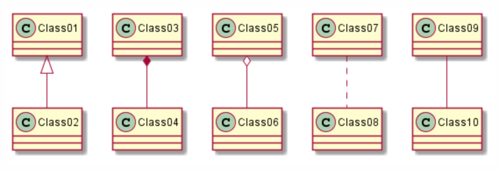

目录
5.4.7. 类图 1¶
类之间的关系¶

实例:
@startuml
Class01 <|-- Class02
Class03 *-- Class04
Class05 o-- Class06
Class07 .. Class08
Class09 -- Class10
@enduml

可访问性¶
Character |
Icon for field |
Icon for method |
Visibility |
|---|---|---|---|
- |
private |
||
# |
protected |
||
~ |
|
|
package private |
+ |
|
public |


{kind=link}
实例:
@startuml
class Dummy {
-field1
#field2
~method1()
+method2()
}
@enduml
你可以采用以下命令停用这些特性 skinparam classAttributeIconSize 0:
@startuml
skinparam classAttributeIconSize 0
class Dummy {
-field1
#field2
~method1()
+method2()
}
@enduml
高级类体¶
定义分隔符来重排方法和属性:
--
..
==
__
实例:
@startuml
class Foo1 {
You can use
several lines
..
as you want
and group
==
things together.
__
You can have as many groups
as you want
--
End of class
}
class User {
.. Simple Getter ..
+ getName()
+ getAddress()
.. Some setter ..
+ setName()
__ private data __
int age
-- encrypted --
String password
}
@enduml
备注和模板¶
你可以使用这些关键字来添加备注:
note left of ,
note right of ,
note top of ,
note bottom of
你还可以在类的声明末尾来添加备注:
note left,
note right,
note top,
note bottom
实例:
@startuml
class Object << general >>
Object <|--- ArrayList
note top of Object : In java, every class\nextends this one.
note "This is a floating note" as N1
note "This note is connected\nto several objects." as N2
Object .. N2
N2 .. ArrayList
class Foo
note left: On last defined class
@enduml
包¶
你可以通过关键词 package 声明包:
同时可选的来声明对应的背景色（通过使用html色彩代码或名称）
注意：包可以被定义为嵌套
包可以定义不同的样式。
你可以通过以下的命令来设置默认样式 : skinparam packageStyle,或者对包使用对应的模板:
实例1:
@startuml
package "Classic Collections" #DDDDDD {
Object <|-- ArrayList
}
package net.sourceforge.plantuml {
Object <|-- Demo1
Demo1 *- Demo2
}
@enduml
实例-包样式:
@startuml
scale 750 width
package foo1 <<Node>> {
class Class1
}
package foo2 <<Rectangle>> {
class Class2
}
package foo3 <<Folder>> {
class Class3
}
package foo4 <<Frame>> {
class Class4
}
package foo5 <<Cloud>> {
class Class5
}
package foo6 <<Database>> {
class Class6
}
@enduml
命名空间(Namespaces)¶
在使用包（package）时（区别于命名空间），类名是类的唯一标识。
也就意味着，在不同的包（package）中的类，不能使用相同的类名。
在那种情况下，你应该使用命名空间来取而代之。
你可以从其他命名空间，使用全限定名来引用类，
默认命名空间下的类，以一个“."开头（的类名）来引用
注意：你不用显示地创建命名空间：一个使用全限定名的类会自动被放置到对应的命名空间。
实例:
@startuml
class BaseClass
namespace net.dummy #DDDDDD {
.BaseClass <|-- Person
Meeting o-- Person
.BaseClass <|- Meeting
}
namespace net.foo {
net.dummy.Person <|- Person
.BaseClass <|-- Person
net.dummy.Meeting o-- Person
}
BaseClass <|-- net.unused.Person
@enduml
自动创建命名空间:
@startuml
set namespaceSeparator ::
class X1::X2::foo {
some info
}
@enduml
箭头方向¶
类之间默认采用两个破折号 -- 显示出垂直 方向的线.
要得到水平方向的可以像这样使用单破折号 (或者点):
实例:
@startuml
Room o- Student
Room *-- Chair
@enduml
可通过在箭头内部使用关键字， 例如left, right, up 或者 down，来改变方向:
@startuml
foo -left-> dummyLeft
foo -right-> dummyRight
foo -up-> dummyUp
foo -down-> dummyDown
@enduml
皮肤参数 2¶
@startuml
skinparam class {
BackgroundColor PaleGreen
ArrowColor SeaGreen
BorderColor SpringGreen
}
skinparam stereotypeCBackgroundColor YellowGreen
Class01 "1" *-- "many" Class02 : contains
Class03 o-- Class04 : aggregation
@enduml
Skinned Stereotypes:
@startuml
skinparam class {
BackgroundColor PaleGreen
ArrowColor SeaGreen
BorderColor SpringGreen
BackgroundColor<<Foo>> Wheat
BorderColor<<Foo>> Tomato
}
skinparam stereotypeCBackgroundColor YellowGreen
skinparam stereotypeCBackgroundColor<< Foo >> DimGray
Class01 <<Foo>>
Class03 <<Foo>>
Class01 "1" *-- "many" Class02 : contains
Class03 o-- Class04 : aggregation
@enduml
Extends and implements¶
@startuml
class ArrayList implements List
class ArrayList extends AbstractList
@enduml